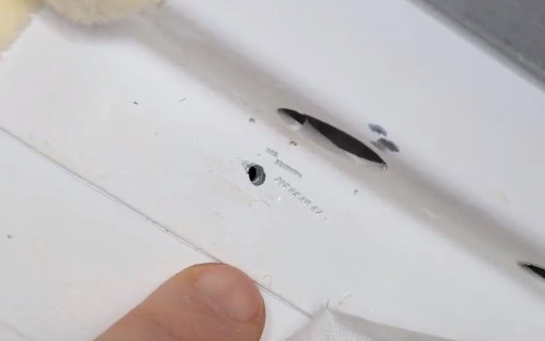
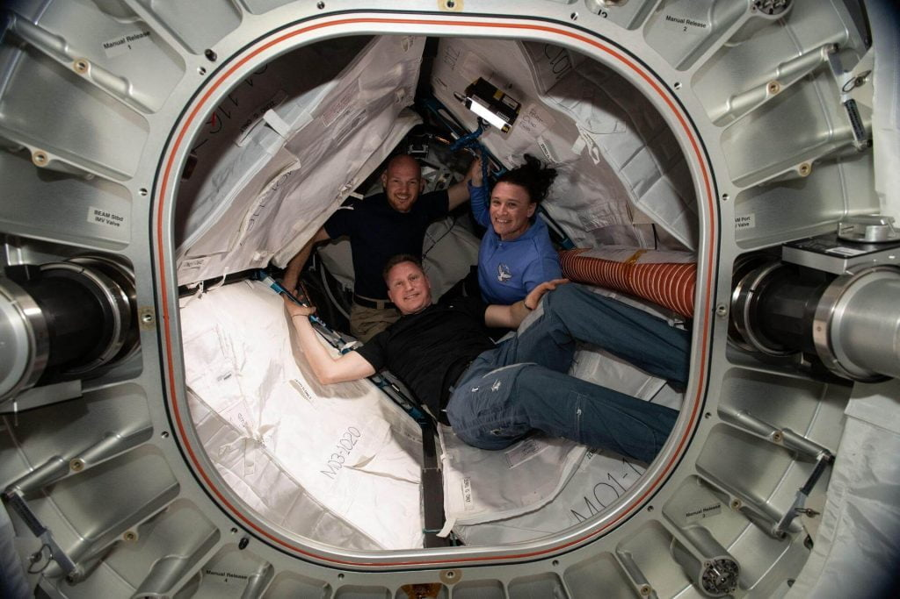

ရုရှား သတင်းဌာနက စွပ်စွဲခြင်း ခံရတဲ့ အမျိုးသမီး အာကာသ ယာဉ်မှူးကတော့ NASA astronaut Serena Auñón-Chancellor ပဲ ဖြစ်ပါတယ်။ ဒီသတင်းမှာ သူမဟာ စိတ်ပိုင်းဆိုင်ရာ စိတ်ကျဆင်းမှု nervous breakdown ဖြစ်ပြီး ကမ္ဘာပေါ်ကို မြန်မြန် ပြန်ချင်လို့ ရုရှားအာကာသယာဉ်ကို ဖျက်ဆီးတာ ဖြစ်တယ်လို့ စွပ်စွဲလိုက်ပါတယ်။
အခုစွပ်စွဲချက် ထွက်ပေါ်လာတဲ့ အချိန်ဟာ အရင်အပါတ်က ရုရှား သုတေသနယာဉ် နော်ကာ ချိတ်ဆက်မှုကြောင့် အပြည်ပြည် ဆိုင်ရာ အာကာသ စခန်းကြီး ကြွမ်းပြန်သွားရတဲ့ ကိစ္စကြောင့် အမေရိကန် မီဒီယာ တွေက ရုရှားအာကာသ စီမံကိန်းကို ဝေဖန် ရေးသားနေတဲ့ အချိန်နဲ့ တိုက်ဆိုင်နေပါတယ်။ ဒီ TASS သတင်းဌာနရဲ့ စွပ်စွဲ ပြောဆိုထားတဲ့ သတင်းဟာ အခုလို ဝေဖန်မှုတွေကို ပြန်ပြီး လက်တုံ့ပြန်တဲ့ အနေနဲ့ ရေးသားတာ ဖြစ်တယ်လို့ ယူဆရပါတယ်။
ဒီ စွပ်စွဲမှုမှာ ပါရှိတဲ့ ရုရှားအာကာသယာဉ် ပျက်စီးမှု ဖြစ်စဉ်ဟာ ၂၀၁၈ ခုနှစ်က ဆိုယု Soyuz MS-09 အာကာသယာဉ် ပျက်စီးမှု ဖြစ်စဉ် ဖြစ်ပါတယ်။ ဒီဖြစ်စဉ်မှာ အပြည်ပြည် ဆိုင်ရာ အာကာသ စခန်းနဲ့ ချိတ်ဆက်ထားတဲ့ ဆိုယု အာကာသယာဉ် နံရံမှာ ၂ မီလီမီတာ လောက် ရှိတဲ့ အပေါက်လေး ရှာတွေ့ခဲ့တဲ့ ကိစ္စ ဖြစ်ပါတယ်။ ဒီအာကာသ ယာဉ်မှာ Serena Auñón-Chancellor လဲ လိုက်ပါပျံသန်း ခဲ့ပါတယ်။ ဇွန်လက ပျံသန်းခဲ့တာ ဖြစ်ပြီး ဒီအပေါက်လေးကိုတော့ ဩဂုတ်လမှာ ရှာတွေ့ခဲ့တာပါ။

ဒီ ထိခိုက်မှုနဲ့ ပါတ်သက်လို့ စုံစမ်းစစ်ဆေးမှုတွေ ပြုလုပ်ခဲ့ပါတယ်။ ဥက္ကာခဲသေးသေးလေး ထိမိလို့ ဖြစ်ရတယ် ဆိုတဲ့ သီအိုရီကို ပညာရှင်တွေက ပယ်ချခဲ့ပါတယ်။ အဲ့အချိန်က ရုရှားသတင်းဌာန အချို့က ဒီယာဉ် ဆောက်လုပ်စဉ် ချွတ်ယွင်းချက်ကြောင့်လို့ ဆိုတာကို ရုရှအာကာသ အေဂျင်စီက မပစ်လွှတ်ခင် လေဟာနည်ခန်းထဲ ထည့်စမ်းထားတာမို့ မဖြစ်နိုင်ဘူးလို့ ငြင်ဆိုပါတယ်။ ရုရှား အစိုးရ အဖွဲ့အတွင်းက ထိပ်ပိုင်း အရာရှိကြီးတွေရဲ့ ကြားမှာတော့ ဒါဟာ အမေရိကန် အာကာသ ယာဉ်မှူး တစ်ဦးဦးက လွန်နဲ့ ဖောက်လို့ ဖြစ်ရတာ ဆိုတဲ့ ကောလဟာလကို ထုတ်လွှင့်လို့ လာပါတယ်။
ရုရှားအာကာသ ယာဉ်မှူး နှစ်ဦးကလဲ အာကာသထဲ ထွက်လမ်းလျှောက်ပြီး ယာဉ်ရဲ့ ပြင်ပကို စစ်ဆေးခဲ့ပါတယ်။ ထိခိုက်မိတဲ့ နေရာကို အသေးစိတ် ဓါတ်ပုံ နဲ့ ဗီဒီယိုတွေ အသေးစိတ် ရိုက်ယူခဲ့ပါတယ်။ ဒါပေမယ့် ဒီစုံစမ်းစစ်ဆေးရေး တွေ့ရှိချက်တွေကိုတော့ ရုရှားဖက်က ထုတ်ဖော်ခြင်း မရှိခဲ့ပါဘူး။
ယခု TASS သတင်းဌာနရဲ့ စွပ်ဆွဲချက်မှာတော့ အတော် ဆိုးဝါးတဲ့ စွပ်ဆွဲချက် တချို့ ပါဝင်နေပါတယ်။ ပထမဆုံး အချက်ကတော့ သူမဟာ စိတ်ပိုင်းဆိုင်ရာ ရောဂါ ခံစားနေရပြီး အဲ့သည် အချိန်မှာ Nervous breakdown ဖြစ်နေတယ် လို့ စွပ်စွဲလိုက်တာပဲ ဖြစ်ပါတယ်။ သူမဟာ အဲ့သည် အချိန်က အာကသ စခန်းမှာ ရှိနေတဲ့ တစ်ဦးတည်းသော အမျိုးသမီး အာကာသ ယာဉ်မှူး ဖြစ်ပါတယ်။
သူမဟာ ရောဂါဝေဒနာ ခံစားနေရတာ ဖြစ်ပေမယ့် စိတ်ကျရောဂါ ခံစားနေရတာတော့ မဟုတ်ပါဘူး။ Deep vein thrombos ခေါ်တဲ့ သွေးကြောတွင်း သွေးခဲတဲ့ ဝေဒနာ ခံစားနေရတာပါ။ ဒီအခြေအနေကြောင့် သူမဟာ စိတ်ကျရောဂါ ခံစားနေရတယ် ဆိုပြီး အခြေအမြစ် မရှိပဲ စွပ်စွဲ ရေးသားထားတာ ဖြစ်ပါတယ်။ အခုလို စိတ်ရောဂါ ခံစားနေရလို့ သူမဟာ အိမ်အမြန် ပြန်ချင်တာနဲ့ ယာဉ်ကို ပျက်စီးအောင် ပြုလုပ်တယ် လို့ စွပ်စွဲ တာ ဖြစ်ပါတယ်။

နောက်ပြီး အမေရိကန် အာကာသ ယာဉ်မှူးတွေဟာ အလိမ်ဖော်စက်နဲ့ စစ်ဆေးမေးမြန်းတာ ခံယူဖို့လဲ ငြင်းဆိုခဲ့တယ်လို့ စွပ်စွဲပြန်ပါတယ်။ ယာဉ်ပေါ်က အမေရိကန် စက်ကိရိယာတွေကို စစ်ဆေးခွင့် ပြုဖို့ကိုလဲ ငြင်းဆိုခဲ့တယ်လို့ ဆိုပါတယ်။ အခု အပေါက်ကို အမေရိကန် ယာဉ်မှူးက လွန်သွားနဲ့ ဖောက်ခဲ့တာ ဖြစ်နိုင်တယ်လို့ ဒီသတင်း ဆောင်းပါးက စွပ်စွဲ ထားပါတယ်။
ဒီ အပေါက် ဖြစ်ရတဲ့ အကြောင်းရင်းကို ဘယ်သူမှ သေချာ မသိရပေမယ့် ရုရှားတွေ ပြောသလို အမေရိကန် ယာဉ်မှူးက လွန်နဲ့ ဖောက်တယ် ဆိုတာကတော့ ဖြစ်နိုင်ချေ အလွန် နည်းလွန်းပါတယ်။ ဖြစ်နိုင်တာ တခုက မြေပြင်ပေါ်မှာ ရှိတုန်း ရုရှား အင်ဂျင်နီယာ တစ်ယောက်ယောက်က မတော်တဆ ထိခိုက်မိသွားတာ ဖြစ်နိုင်ပါတယ်။ အထက်ကို အစီရင် ခံရမှာ ကြောက်တော့ ဒါကို ဆူပါဂလူးနဲ့ ပိတ်လိုက်ပုံ ရပါတယ်။ ဒီ ဆူပါဂလူးက မြေပြင်ပေါ်မှာ လေမဲ့အခန်းထဲ ထည့်စမ်းတာကို ခံနိုင်ပေမယ့် အာကာသထဲ ရောက်တဲ့ အခါတော့ မခံနိုင်ပဲ ပြန်ပေါက်သွားတာ ဖြစ်နိုင်ပါတယ်။
နာဆာကတော့ ဒီကိစ္စနဲ့ ပါတ်သက်လို့ ကြေငြာချက် အတိုလေး တစ်စောင် ထုတ်ပြန်ခဲ့ပါတယ်။ ဒီကြေငြာချက်မှာ စွပ်စွဲခံရတဲ့ အာကာသ ယာဉ်မှူးရဲ့ ရောဂါဟာ သူမရဲ့ ကိုယ်ရေးကိုယ်တာ ကိစ္စသာ ဖြစ်လို့ နာဆာ အနေနဲ့ ဘာမှ ဝေဖန် ပြောကြားလိုခြင်း မရှိဘူးလို့ ရေးထားပါတယ်။ ပါဝင်တဲ့ အာကာသ ယာဉ်မှူးတွေရဲ့ ကိုယ်ရေးကိုယ်တာ လုံခြုံရေးအတွက် ဒီကိစ္စနဲ့ ပါတ်သက်လို့ ဘာမှ ဝေဖန် ပြောကြားလိုခြင်း မရှိဘူး လို့ ကြေငြာချက်မှာ ရေးသားထားပါတယ်။
Reference: Russia’s space program just threw a NASA astronaut under the bus